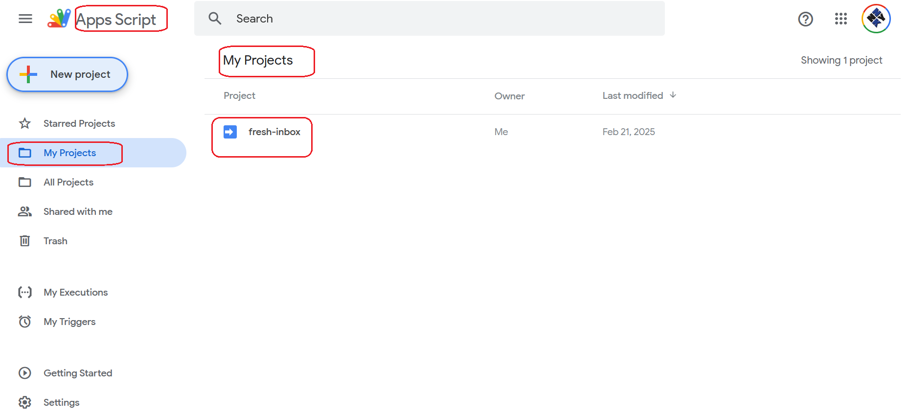

Demo
Here we'll walk you through the setup and execution of a Google Apps Script project using visual aids
Dashboard
The dashboard of the Google Apps Script appears in this image. You can see the created project 'fresh-inbox' circled in red. 